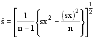

Calculating Full-Range Correlations for the Mega Test
Grady M. Towers
Published online with permission from the author
(Editor's1 note: This letter is published with the permission of Mr. Towers. It is in response to Professor O'Rourke's remarks on the unreliability of IQ tests in Insight #7, page 4.) Mr. Towers is a former anthropology student and a self-taught expert in psychometrics.)
1 Editor is Ron Hoeflin -- DTM
Thank you for the O'Rourke data; it's always fun to play with the numbers. I'm afraid, however, that Professor O'Rourke should stick to engineering and leave psychometrics to psychometricians. His conclusion that "if these tests measure anything, they do so rather unreliably, so unreliably as to make individual scores nearly meaningless", is completely incorrect. He obviously doesn't understand the term reliability in its psychometrically correct sense. What his calculations prove is that the Mega Test is a parallel test to some tests but not to others. The general rule of thumb in psychometrics is that two tests are parallel if the correlation between them is "nearly" the same as the reliabilities of the tests -- preferably KR-20 reliabilities. From the data given here, the Mega Test is parallel to the LAIT, the GRE and the SAT. It is not parallel to the CTMM or S-B. That's not surprising. The CTMM doesn't have enough top, and too many S-B scores were probably childhood IQs that have regressed to the mean, making the data meaningless.
Before any of the data can be analysed, we first must derive the standard deviations for each test. This is quite simple and turns out to be...

O'Rourke data
Next, we correct the reported correlations for range restriction. Unfortunately, the formula supplied to Ron Hoeflin by Fred Britton is incorrect. The correction is usually made using McNemar's formula which is...

where
rc = the corrected correlation
ru = the uncorrected correlation
Sx = the unrestricted standard deviation
sx = the restricted standard deviation
See equation 9N.13 in Bias in Mental Testing.
Another formula that gives exactly the same result as McNemar's was derived by Gulliksen.

where
So, using either of these two formulas, the corrected correlations become...
| original correlation | corrected correlation (McNemar's) | |
| LAIT | .625512 | .6965385 |
| CTMM | .258045 | .3676387 |
| S-B | .224477 | .267126 |
| GRE | .461738 | .7814215 |
| SAT | .517292 | .80050 |
For the standard deviations on the original norming samples for each test, I used those supplied by the Langdon Statistical report, norming number 2: LAIT = 13.84; CTMM = 16; S-B = 15.8; GRE = 255; SAT = 255.
Remember that three of these tests were not normed on the general population. The LAIT was not, and neither was the GRE or the SAT. This is also another good reason that the Mega Test correlates so highly with them, but not with the CTMM or S-B. Also, the "general population" standard deviation for each is whatever the standard deviation was for its original norming sample, not the true general population standard deviation unless that really was the norming group.
Since we're on the subject of correcting for range restriction, I might as well point out that there's also a correction for range restriction on reliabilities. This was also derived by Gulliksen.

The interesting thing about this formula is that it can be turned around. It allows us to estimate the probable reliability in a homogeneous high level group. This is important because there's a psychometric "law" that says that no test can correlate more highly with a criterion than the square root of its reliability. Most of the tests cited here have reliabilities near .9 or better. If you work out their probable reliabilities for some of this data, you will find that there's suprisingly little drop even in very high level groups. The formula also has some surprising implications for the Mega Test. The Mega Test data from the LAIT group shows a mean of 23.96 and a standard deviation of 8.65. I calculated a mean of 15.67 and a standard deviation of 8.55 for the 3047 (?) scores obtained from the Omni sample (uncorrected for classification error.) There was little or no drop in reliability in this lower range, apparently. That's a little surprising.
Grady
Return to the Uncommonly Difficult I.Q. Tests page.